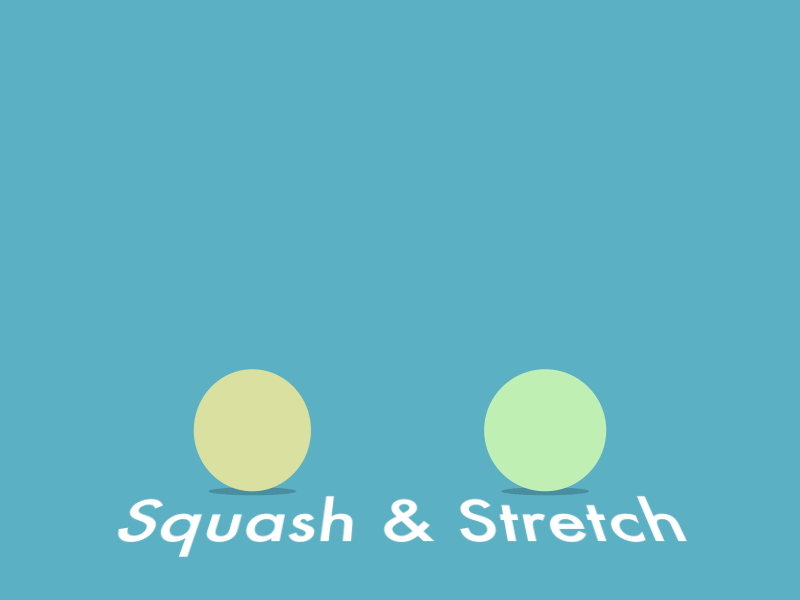

Squash & Stretch
Course Details
Video Host: Alan Becker
Video Duration:3 minutes
Want to understand the first of the 12 prinicples of animation?
Course recommendations to follow along:
- Any 2D animation software
- A digital pen/digital tablet with/without a screen display.
- Basic knowledge of animation ( See 12 principles of animation)
What is squash & stretch?
Squash and Stretch (S&S for short) is the principle of applying a contrasting change of shape—from a squash pose to a stretch pose or vice versa—to give a feeling of fleshiness, flexibility, and life in animation. The absence of squash and stretch gives a rigidity or stiffness to the motion. The transition between a proper Squash pose to a Stretch pose, or the other way around, breaks the perfect solidity that CG animation in particular inherently gives to everything.
Why do animators need Squash and Stretch?
Squash and Stretch can make characters and inanimate objects have a feeling of life by introducing a flexible quality. S&S can be applied to a single body part, say an eyeball, or the entire character’s pose. The latter is particularly useful when making rigid objects come to life, like the classic Disney Flour Sack, which is a beginning traditional animator’s test case.
How to master Squash and Stretch

Overdoing S&S is probably one of the biggest errors of a beginning animator. It’s a fun toy in the box, so everyone wants to play with it and show off. Be careful not to overdo it so your character looks broken/off-model or starts losing believability. A common saying for a lot of animation studios is to treat S&S with a ‘feel it, but don’t see it’ guideline. The idea being, you feel the S&S when the animation plays back at 24fps, but can’t really see it. Only by stepping through the frames you would see the S&S. If the S&S is too obvious when playing back it is a sign that you are either using too much or the timing for it is too long. A thing to remember when using broad S&S but want to achieve ‘feel it, not see it’, is to recover out of the extreme S&S poses quickly (transition back to the neutral shape). This gives a nice snappiness to the S&S and keeps the audience from picking up on it and getting distracted.
Maintaining/Preserving Volume
It’s also important to “maintain volume,” that is, the object should not appear to squash or stretch so much that it actually starts to look like it is growing or gaining size and mass. CG rigs can mathematically preserve the volume correctly (as in the case of the Animation Mentor Advanced Ball), but this may not always look “visually correct” to our eye and possibly need to be cheated based on taste and style.
Back to courses {% if user.is_authenticated %} Mark as finished {% endif %}